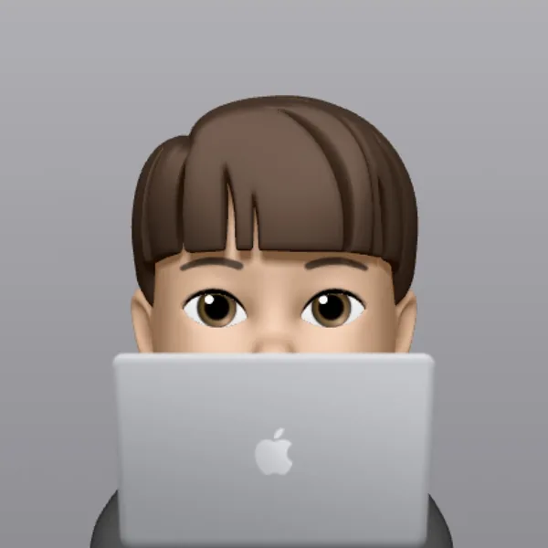

ClouDoc
문서 중앙화 보안 솔루션 클라이언트와 파일시스템 드라이버 개발. 가상드라이브, 탐색기 이동·복사 정책, 매체/네트워크 제어와 배포 파이프라인을 맡았고, 부팀장으로 운영 이슈를 정리했습니다.
AI Product EngineeringC++ Systems & Inference
안녕하세요, 선동인입니다. OpenVINO C++ 추론 SDK와 Windows 클라이언트를 개발하고, 실시간 최적화·커널 보호·배포·장애 분석까지 수행해온 시스템 소프트웨어 엔지니어입니다.
AI 모델을 C++ 추론 SDK와 클라이언트 소프트웨어에 통합하고, 실시간 최적화부터 OS 연동·배포·운영 장애까지 해결해온 개발자입니다. 사람·카메라 탐지와 liveness 3종을 포함한 모델 5종 + 특징점 추출 파이프라인의 처리 경로를 재설계해 프레임당 지연을 150ms에서 40~50ms로 줄였고, 이 구현이 걸린 핵심 클라이언트 저장소에서 81%(832/1,029 커밋, 기여 1위)를 차지합니다. Windows 커널 드라이버·Credential Provider로 넓힌 시스템 통합 경험을 macOS 클라이언트 확장에도 적용하고 있으며, 최근 12개월 두 계정 전 저장소·전 브랜치 합계는 934커밋으로 집계됩니다.
주요 개발 활동은 회사 조직의 프라이빗 저장소에 있습니다 · 개발 활동 근거 보기 ↓

Windows에서 개발한 Vision AI 클라이언트의 동작을 Swift·AVFoundation 기반 macOS 앱으로 옮기며, Claude 구현과 Codex 리뷰를 설계·검증 절차 안에 통제한 작업입니다
사용자 PC에서 모델 5종과 특징점 추출이 프레임마다 도는 구성 — 프레임당 40~50ms · 소리 없음
What I Do
무엇을 만들 수 있는지, 검증 가능한 축으로만 묶었습니다
훈련된 모델을 추론 SDK와 판별 미들웨어로 감싸 Windows 애플리케이션에 연결하고, 설치·배포와 현장 장애까지 이어서 해결했습니다
한 경로에서 순차 처리하던 수집·전처리·추론·후처리를 분리하고, ROI·위변조 탐지를 조건부 실행해 150ms → 40~50ms로 줄였습니다
FileSystem Minifilter 단독 설계·개발. 화이트리스트 기반 솔루션 자기보호, 관리자·SYSTEM 권한 우회까지 커널에서 차단, IOCTL 기반 커널-유저모드 통신 설계. Microsoft filter altitude 정식 할당
OpenVINO 기반 C/C++ 추론 엔진과 C++/C#/Python 바인딩을 만들고, 모델 5종 + 특징점 추출 경로를 일반 사용자 PC에 맞게 최적화했습니다
백신·EDR 충돌, OS 업데이트, 정책 공백처럼 배포 뒤에야 드러나는 문제를 고객 환경에서 재현하고, 풀 덤프와 WinDbg로 원인 경로를 규명해 코드 수정으로 연결합니다
고객사 실무자·보안 벤더·AI 리서처 사이에서 기술 언어를 통역합니다. 장애 분석을 예외 정책과 코드 변경으로 연결하고, 엠클라우독에서는 부팀장으로 운영 이슈를 조율했습니다
NSIS, Themida, 인증서 서명 기반 릴리스 파이프라인을 구축하고 AI 클라이언트 전체 릴리스 프로세스를 담당했습니다
Projects
AI 모델을 시스템 소프트웨어에 통합하며 해결한 문제와 구현 결과
OpenVINO 추론 SDK와 판별 미들웨어를 설계하고 Windows 클라이언트, Credential Provider, 커널 자기보호, 설치·배포와 운영 장애 분석까지 연결한 대표 개발 사례입니다
✦ OpenVINO 기반 C++ 추론 SDK와 C/C++/C#/Python 바인딩 개발
✦ 모델 5종 + 특징점 추출 처리 150ms → 40~50ms
✦ Windows 클라이언트·Credential Provider·커널 드라이버까지 통합
✦ 이 사례가 만든 사업 결과 — 2024 회사 매출의 40–50%, 누적 약 80억 원
✦ 사내 클라이언트 저장소 커밋 81% · 1위 기여자 (832 / 1,029 커밋 · 기본 브랜치 contributors 집계 · 2026-08-02 기준)
구축·수행 고객사 — 에이전트 보안 파트 메인 개발
Windows 파일·프로세스 접근을 커널에서 통제하는 Minifilter 드라이버 — 베이스 설계부터 서명, MS 등재까지 단독 개발
훈련된 AI 모델을 애플리케이션에서 쓸 수 있게 하는 OpenVINO 기반 추론 엔진 SDK
문서 중앙화 보안 솔루션 클라이언트와 파일시스템 드라이버 개발. 가상드라이브, 탐색기 이동·복사 정책, 매체/네트워크 제어와 배포 파이프라인을 맡았고, 부팀장으로 운영 이슈를 정리했습니다.
영상 기반 스윙 분석 데스크톱 프로그램을 기획부터 현장 설치까지 1인 개발. OpenCV/OpenVINO 추론을 외부 사용 환경에 직접 적용한 사례입니다.
Deep Dive
AI(Codex)가 CTO 관점에서 파고든 질문과, 제가 실제로 내린 판단입니다
서버 장애와 망분리 환경에서도 추론이 중단되지 않고, 얼굴 영상을 외부로 보내지 않아야 했습니다. 전용 GPU를 전제하지 않는 Intel CPU 기반 사용자 PC를 실행 환경으로 잡았습니다.
그래서 OpenVINO 기반 SDK와 판별 미들웨어를 설계했습니다. CPU 스레드 튜닝, 모델 캐싱, 내장 그래픽 활용 가능성처럼 클라이언트 실행 환경에서 조정 가능한 선택지를 확보했습니다.
파이프라인은 단순히 스레드를 늘리는 방식으로만 보지 않았습니다. 위변조 탐지는 얼굴 기반 공격이므로 얼굴이 검출된 경우에만 ROI를 잡아 수행했고, 고객 정책에 따라 모든 판별 이력을 남겨야 하는 모드에서는 전체 탐지도 지원했습니다. 성능 수치는 얼굴·바디 탐지, 카메라 탐지, 위변조 탐지와 특징점 추출을 모두 수행하는 가장 높은 보안 강도를 기준으로 잡았습니다.
속도 개선은 모델 경량화나 입력 해상도 축소가 아니라 추론 아키텍처와 처리 경로 개선에서 얻었습니다. 같은 사용자 PC에서 프레임당 처리 시간을 150ms에서 40~50ms 수준으로 줄였고, 모델 자체 정확도는 유지했습니다. 정확도 손실 가능성은 사용자 PC에서 실행 가능한 모델을 만들기 위한 FP16/양자화 단계의 트레이드오프로 분리해 판단했습니다.
liveness는 RGB 단일 프레임만으로 강한 공격을 모두 막기 어렵다는 점을 전제로, 위협도가 높은 로그인 세션에서는 성능보다 탐지 강도를 우선했습니다. 갤러리의 liveness 데모도 Windows 로그인 세션 기준이라, 보안 솔루션의 시작 지점에서 가능한 한 강하게 체크하도록 설정한 사례입니다.
같은 FileSystem Minifilter지만 설계 축이 정반대였습니다.
엠클라우독의 드라이버는 사용자 파일시스템 전체를 관장하는 정책 기반 접근 제어가 목적이었습니다. 제품 자체가 프로세스 기준으로 동작했고, 정책 파일이 커널 메모리에 상주하면서 "이 프로세스가 이 경로에 권한이 있는가"를 판단했습니다. 여기서 어려운 건 차단이 아니라 호환성이었습니다. OS 업데이트나 신규 프로그램이 나올 때마다 연달아 일어나는 파일 I/O를 감당해야 했고, 프로그램 쪽에서 fallback 처리를 하지 않아 정책을 새로 적용하는 도중 문제가 되는 경우도 많았습니다.
시선에이아이의 CULockerFsfd는 솔루션 자기보호를 위한 화이트리스트가 목적입니다. 정책 복잡도보다 차단 강도와 우회 봉쇄가 핵심이라, 화이트리스트에 없으면 별도 판단 없이 거부하면 됩니다. 대신 상당히 강하게 걸었습니다 — 솔루션 내부 프로세스 사이에도 zero trust를 적용했고, 관리자나 SYSTEM 권한 프로세스라도 정책에 맞지 않으면 커널 레벨에서 접근을 막았습니다.
화이트리스트가 강할수록 운영이 깨지기 쉽다는 게 실제로 가장 큰 숙제였습니다.
업데이트는 일반 사용자 세션과 분리된 제한된 유지보수 경로에서만 수행되도록 설계했습니다. 도중 실패는 단계별로 되돌릴 수 있게 했고, 완료 후에는 무결성을 다시 검증했습니다. 보호가 일시적으로 완화되는 구간은 존재할 수밖에 없으므로, 그 창을 얼마나 좁히고 그 안에서 무엇을 다시 확인하느냐가 설계의 핵심이었습니다.
백신·EDR은 원칙적으로 차단하되, OS가 스스로 보호하는 Windows Defender 컴포넌트는 허용했습니다. 그 외 제품은 고객사 환경과 정책에 따라 예외 등록이나 운영 협의로 풀었습니다. 장애 분석은 모니터링 서비스를 따로 두고, 덤프는 레지스트리 설정으로 수집해 서버로 자동 전송되게 했습니다.
IOCTL로 주고받되, 단순 체크섬처럼 위변조에 취약한 방식은 배제하고 요청 무결성과 호출 주체를 함께 검증하는 인증 계층을 두었습니다. 파일 I/O처럼 초당 수천 번 들어오는 경로가 아니라 검증에 연산을 더 써도 부담이 적다고 봤습니다. 목적은 암호화가 아니라 요청 위변조와 임의 프로세스의 호출을 걸러내는 것이고, 커널과 통신하는 앱 자체를 소수로 한정했습니다.
바이너리 쪽은 패킹·난독화만을 보안 경계로 보지 않고, 경로·무결성·서명 등 복수의 신뢰 신호를 함께 확인했습니다. 하나가 뚫려도 나머지가 남도록 판별 근거를 겹쳐 두는 것이 목표였습니다.
충돌은 예외가 아니라 상수였습니다. 특히 DLL 인젝션, API 후킹, 파일시스템 필터링처럼 타 EDR·백신과 같은 시스템 영역을 쓰는 기능에서 부딪힐 가능성이 컸습니다.
재현 가능한 시나리오는 풀 덤프를 남기도록 설정하고, 충돌 시점에 각 프로세스와 드라이버가 어떤 API·I/O 경로를 타는지 WinDbg로 분석했습니다. 원인이 자사 기능이면 예외 처리나 기능 수정으로 대응했고, 서로의 동작이 맞물려 생기는 문제면 고객사 보안 담당자나 해당 솔루션 벤더와 협의해 화이트리스트 등록을 진행했습니다. 인터넷망 연결이 가능한 환경이면 벤더 쪽에, 온프레미스면 고객사 담당자를 통해 예외 정책을 잡는 식이었습니다.
기능적으로 충돌이 불가피한 조합은 상호 보완적으로 한쪽 기능을 끄는 운영 정책으로 정리했습니다. 코드만으로 풀 수 없는 제약은 관계자와 합의해 운영 가능한 상태로 만들었습니다.
코어 SDK는 기능만 제공하고 상태와 리소스를 무겁게 들고 있지 않도록 했습니다. 메모리 소유권은 애플리케이션에 두고, 생명주기는 명시적인 init/finalize로 열고 닫게 했습니다. 여기에 언어별 생성자·소멸자 패턴이 있으면 그것도 함께 적용해서, 어느 쪽 습관으로 써도 리소스가 새지 않도록 했습니다.
모델은 최초 로딩 시 필요한 캐시 파일을 만들고, 이후에는 필요한 모델만 부분 load/unload할 수 있게 구성했습니다. 실행 모드마다 사용하는 모델 조합이 다르다는 점을 반영한 선택이었습니다.
C#·Python Wrapper는 제가 상상해서 만들지 않고, 실제 그 언어를 쓰는 개발자들에게 써보게 하면서 API 형태를 조정했습니다. SDK는 결국 쓰는 사람이 편해야 채택된다고 생각합니다.
위 답변은 실제 기술 면접 시뮬레이션에서 나온 것으로, 제품 보안에 영향을 줄 수 있는 구체적 구현 값은 의도적으로 제외했습니다.
Activity
잔디에 보이지 않는 것까지 — 전 저장소 · 전 브랜치 집계
회사 계정(disun-cubox-ai, SECERN AI 조직) + 개인 계정(devdongin)의 전 저장소 · 전 브랜치 커밋 집계 (중복 제거, KST 기준). 고객사별 코드가 브랜치로 분리 운영되어, 기본 브랜치·gh-pages만 세는 GitHub 잔디에는 잡히지 않는 고객사 브랜치 push까지 포함한 실제 활동량입니다. 2026-08-02 수집 · merge 커밋 포함 · author 계정 기준 통합.
| 월 | commits |
|---|---|
| 2025-08 | 35 |
| 2025-09 | 38 |
| 2025-10 | 35 |
| 2025-11 | 51 |
| 2025-12 | 65 |
| 2026-01 | 67 |
| 2026-02 | 68 |
| 2026-03 | 143 |
| 2026-04 | 121 |
| 2026-05 | 143 |
| 2026-06 | 52 |
| 2026-07 | 83 |
| 2026-08 | 33 |
Career & Education
2022.07 – 현재
Windows Systems / AI Inference Engineer
2020.01 – 2022.05
보안 솔루션 클라이언트 / 커널 드라이버 개발 · 부팀장
호서대학교 정보통신공학 학사 (2014 – 2020)
졸업작품: 시각장애인을 위한 영상·음성 복합 서비스
교내 캡스톤디자인 경진대회 최우수상 (2019)
YOLO 객체 인식 + STT/TTS 기반 시각장애인용 물건찾기 시스템
Blog & Links
기술 블로그 최신 글 — 매주 자동 갱신됩니다
Contact
커널, 보안, AI 추론 — 어떤 이야기든 환영합니다